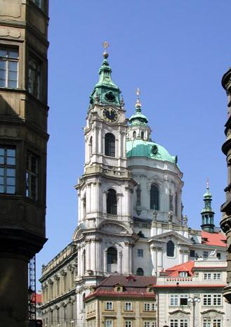
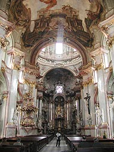
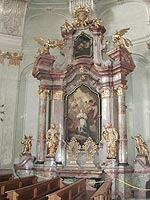
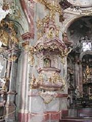
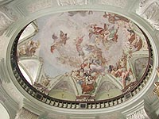
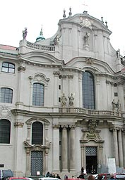

SAINT NICOLAS DE MALA STRANA
Les marbres et l'onyx tressés comme la corde,
La lanterne juchée et les triples frontons
Où brandissent les saints leurs croix et leurs bâtons
Des masses et des pans maîtrisent la concorde.

Pour ouvrant la splendeur d'un choeur dont l'or déborde
Qu'aux plafonds apaisés s'étalent les cartons
Et posent contournés de monstrueux santons
Dont le rythme au chaos sut arracher la horde.
Une tempête habite la chaire et la bat
Et, si ne la tenait, la jeterait à bas,
Un poing qui son vouloir impose, presse, scelle -

Chute aux cieux engloutie, inlassable combat,
Quand déchaînant la force et réveillant le zèle,
Le dompteur ses instincts fouaille, mène, muselle.
Michel Galiana (c) 2005
SAINT NICHOLAS CHURCH ON THE LESSER SIDE
Marble and onyx are entwined, like in a tress.
In high-perched cupola and triple pediments
Where saints wield their crosses and their tools of torment
Surface and volume are of harmony possessed.
They usher in the pomp, overflowing with gold,
Of a choir whose peaceful ceilings display pictures
With monstrous contortions of Christmas crib figures
And rhythm has redeemed from chaos this wild horde.

A tempest inhabits the pulpit and hits it
And would scatter it to pieces, but for a fist
That holds it and its own strong ruling enforces.
Fall in heavens engulfed, combat that never ceased,
When unleashing their strength and their zeal arousing,
The tamer teases, leads and muzzles his instincts.

Transl. Christian Souchon (c) 2005
Note :
St Nicolas de Mala Strana compte parmi les plus importants
édifices baroques d'Europe et il est d'usage de voir en lui le
plus bel exemple d'art baroque de Bohème, style qui témoigne des
bouleversements politiques et sociaux intervenus depuis 1620:
la recatholisation et la consolidation du pouvoir absolu.
Sa construction débuta en 1673 sous la direction de P. Bos, mais
la phase décisive ne commença qu'après 1702 et selon un plan
nouveau attribué à Christophe Dientzenhofer. Son fils, Kilian
Ignace Dientzenhofer poursuivit son oeuvre et conçut ces chefs
d'oeuvre que sont la voûte et le robuste dôme, éléments
caractéristiques du paysage praguois. L'ouvrage fut achevé en
1752.
Le clocher, modifiié par Anselme Lurago fut terminé la même année.
L'auteur du décor intérieur est K. I. Dientzenhofer, dont les principaux
collaborateurs furent le stucateur Jean Hennevogel d' Ebenberg, les
peintres Joseph Kramolín, Pierre Prachner, Ludwig Kohl, François-Xavier
Palko et Jean-Luc Kracker qui couvrit la voute de la grand nef
d'une fresque représentant la vie de St Nicolas et qui date de 1760.
Les nombreuses statues qui ornent les piliers et entourent les autels
sont dues à François-Ignace Platzer, André Pozza,J. B. Kohl et R. J.
Prachner.
La chaire a une tribune de marbre artificiel et est décorée de sculptures
sur bois dorées provenant de l'atelier de R. J. Prachner (1762-66).
L'orgue baroque tardif fut construit par Thomas Schwarz entre 1745
et 1746.
Dix peintures de K. kréta constituent cequ'on appelle le Cycle de la
Passion.
St Nicholas Church of Lesser Town belongs among the leading
baroque constructions in Europe and is usually defined as being
the most beautiful building of Czech baroque, a style representing
political and social changes having arisen after 1620, recatholisation
and consolidation of absolutist ruler power
Construction was commenced in 1673 by P. Bos, but the decisive
phase began only after 1702 and that according to a new variant,
ascribed to Krytof Dientzenhofer. His son, Kilián Ignác Dientzenhofer
completed the construction and designed the unique vault and robust
dome, which became one of the Prague's main landmarks. The
construction was completed in 1752. The bell-tower, modified by
Anselmo Lurago, was also completed in the same year.
The author of the inner décor is K. I. Dientzenhofer, whose main
collaborators were the plasterer Jan Hennevogel of Ebenberg, the
painters Josef Kramolín, Petr Prachner, Ludvík Kohl, Frantiek Xaver
Palko and Jan Luká Kracker who covered the vault of the main nave
with a fresco depicting the live of St. Nicholas which dates back to 1760.
The many statues standing at the pillars, and around the altars were
made by Frantiek Ignác Platzer, Andrey Pozza,J. B. Kohl and
R. J. Prachner.
The pulpit has a platform made of artificial marble, which is decorated with
gilded woodcuts originated in the workshop of R. J. Prachner (1762-66).
The late Baroque organ was built by Tomá Schwarz during 1745 - 46.
Ten paintings by K. kréta represent the so-called Passion cycle .
Listen to "St Nicholas" in English